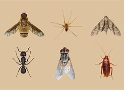
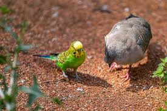
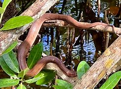

Diversidad de Fauna en San Cristóbal
San Cristóbal es una comunidad perteneciente al municipio de San Agustín Chayuco, en el distrito de Santiago Jamiltepec, ubicado en la costa del estado de Oaxaca. Se encuentra a una altitud de 300 metros sobre el nivel del mar y cuenta con una población de 800 habitantes. La región presenta un clima mayormente soleado, con temperaturas que oscilan entre los 19°C y los 37°C.
La fauna que predomina en la comunidad de San Cristóbal es importante conservarla debido a:
- Mantenimiento del equilibrio ecológico: Cada especie cumple una función en su ecosistema, como controlar plagas, polinizar plantas o reciclar nutrientes. Si desaparecen, se pueden generar efectos en cadena que afecten todo el sistema.
- Biodiversidad y resiliencia: Un ecosistema con muchas especies es más resistente a cambios ambientales, enfermedades y desastres naturales.
- Beneficios económicos y medicinales: Muchas especies son clave para la agricultura, la pesca y la medicina. Plantas y animales han sido fuente de medicinas esenciales, y su pérdida podría significar la desaparición de futuros tratamientos.
- Importancia cultural y espiritual: Para muchas culturas, la fauna tiene un significado simbólico, religioso o estético. Además, el ecoturismo basado en la fauna es una fuente de ingresos para muchas comunidades.
- Ética y responsabilidad: Como seres humanos, tenemos la responsabilidad de proteger a otras especies y evitar su extinción debido a nuestras acciones, como la deforestación, la caza indiscriminada o el cambio climático.
En la comunidad de San Cristóbal se encuentra una gran variedad de especies animales, clasificadas de la siguiente manera:
Insectos

Insectos: Chapulín, chicharra, chicatana, arriera, barrendera, zancudo y gran variedad de gusanos.
Aves Silvestres

Aves silvestres: Paloma, paloma ala blanca, chachalaca, gavilán, perico, zopilote, zanate, lechuza y tecolote.
Reptiles

Reptiles: Víbora de cascabel, coralillo, culebra lechosa.
Especies acuáticas: Camarón de río, cangrejos, blanquillas, mojarra.